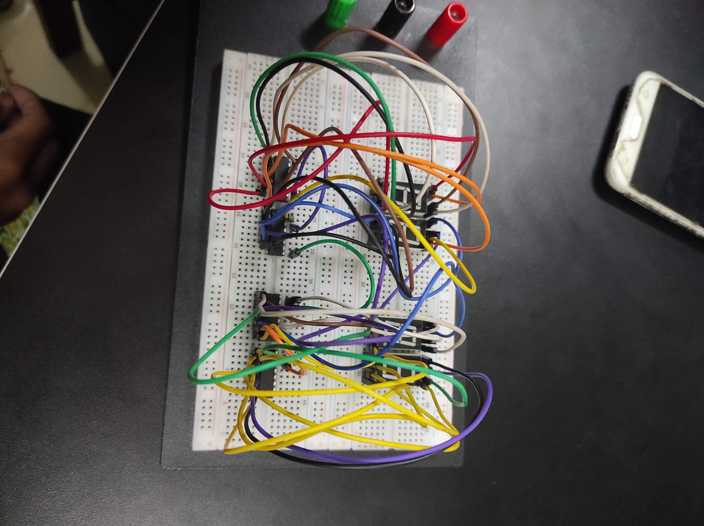
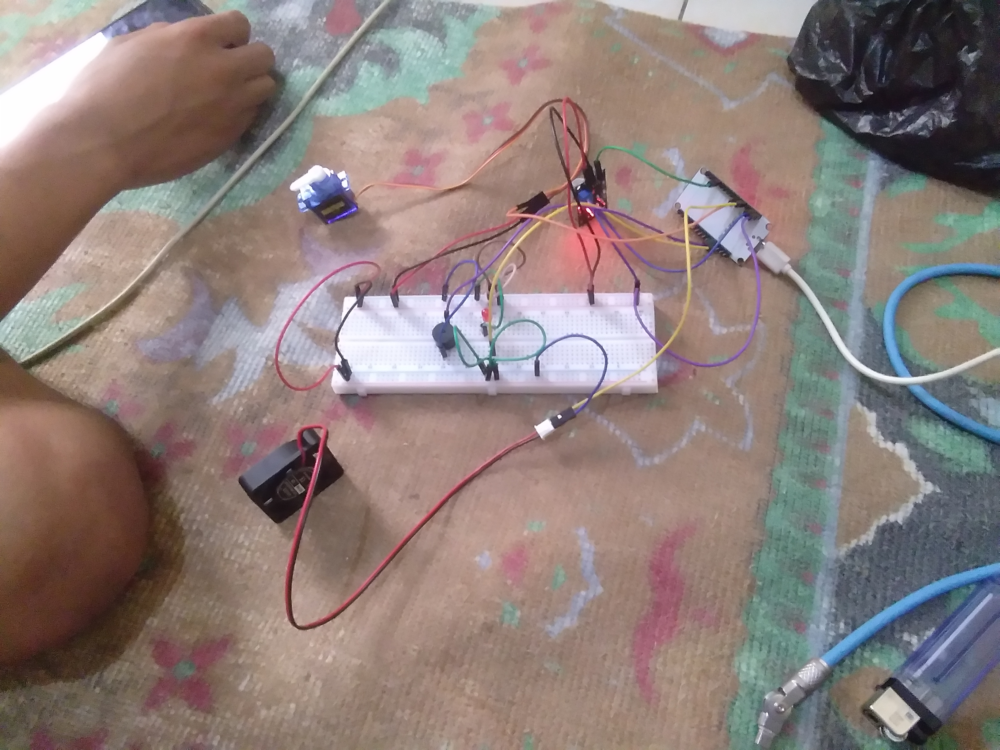
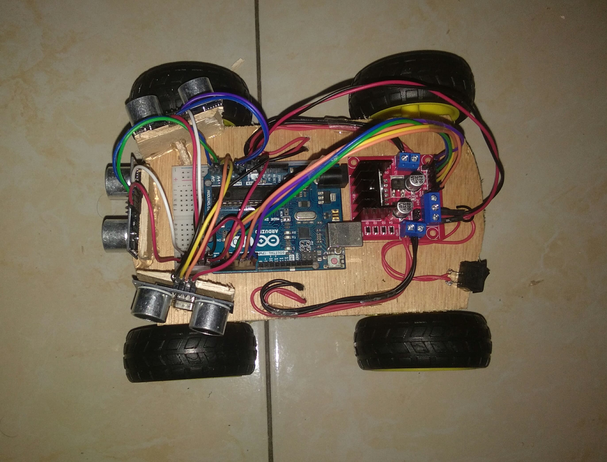
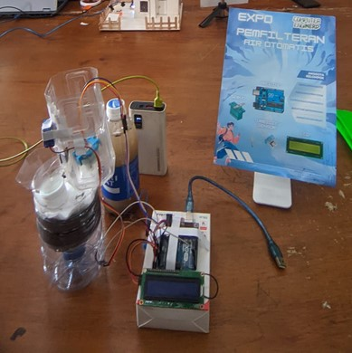

Hasil project yang pernah saya buat salah satunya jam digital menggunakan arduino nano, ic, seven segment, dan kabel jumper.
Hasil project yang pernah saya buat yaitu pendeteksi gas menggunakan esp32, sensor MQ-2, servo, buzzer, led, resistor dan kipas.
Hasil project yang pernah saya buat yaitu membuat robot wall follower yang bisa menelusuri labirin menggunakan sensor ultrasonik, sensor infrared, arduino uno, motor dc dan motor servo.
Hasil project yang pernah saya buat yaitu pemfilteran otomatis menggunakan arduino uno, sensor turbidity, servo, dan LCD untuk menampilkan nilai ntu dan kondisi air.
Selain dari keempat project tersebut saya juga pernah membuat lampu otomatis tanpa microkontroller, saya juga pernah membuat website program antrian, saya juga membuat website cv, saya pernah membuat program menggunakan java dan c++, saya juga pernah membuat website yang terhubung ke database MYSQL. Saya juga pernah membuat website menggunakan wordpress, saya juga pernah membuat aplikasi mobile menggunakan template dari suatu website.